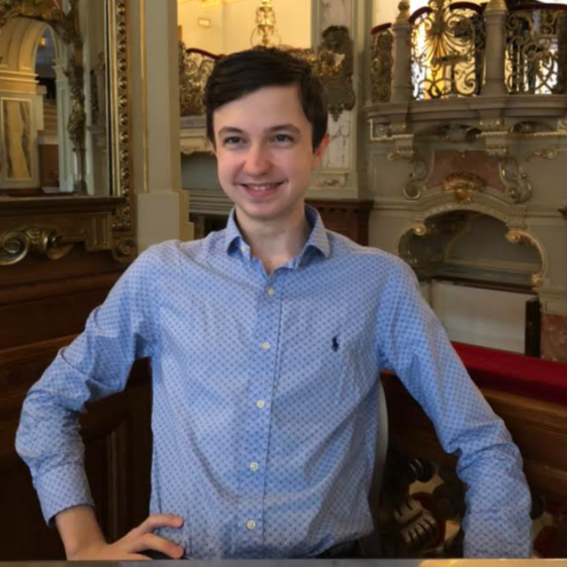

Hervay Bence
 Ich bin Student der Informatik an der University of Cambridge und habe mich im letzten Jahr meiner Highschool-Studien Alphacademy angeschlossen. Ich besuchte die Mathematikabteilung des Fazekas Mihály Gymnasiums in Budapest, wo ich 6 Jahre lang intensiv Mathematik (Nationale Informatik-Olympiade - 12. Platz), Informatik (Nationale Informatik-Olympiade - 13. und 14. Platz) und Physik (Nationale Physik-Olympiade - 1. und 7. Platz) studierte. Die Kombination dieser drei Fächer half mir, in verschiedenen Robotikwettbewerben erfolgreich zu sein, wobei mein Favorit die First Global Challenge 2017 war, eine Weltmeisterschaft im Bau und Programmieren von Robotern, die wir gewonnen haben und die zu einer Einladung ins Weiße Haus durch die Familie des Präsidenten führte. Ich habe auch fünf Jahre lang Akrobatik-Basketball als Mitglied des FaceTeams praktiziert und regelmäßig Volleyball und Basketball gespielt. Derzeit spiele ich wettbewerbsmäßig Ultimate Frisbee.
Ich bin Student der Informatik an der University of Cambridge und habe mich im letzten Jahr meiner Highschool-Studien Alphacademy angeschlossen. Ich besuchte die Mathematikabteilung des Fazekas Mihály Gymnasiums in Budapest, wo ich 6 Jahre lang intensiv Mathematik (Nationale Informatik-Olympiade - 12. Platz), Informatik (Nationale Informatik-Olympiade - 13. und 14. Platz) und Physik (Nationale Physik-Olympiade - 1. und 7. Platz) studierte. Die Kombination dieser drei Fächer half mir, in verschiedenen Robotikwettbewerben erfolgreich zu sein, wobei mein Favorit die First Global Challenge 2017 war, eine Weltmeisterschaft im Bau und Programmieren von Robotern, die wir gewonnen haben und die zu einer Einladung ins Weiße Haus durch die Familie des Präsidenten führte. Ich habe auch fünf Jahre lang Akrobatik-Basketball als Mitglied des FaceTeams praktiziert und regelmäßig Volleyball und Basketball gespielt. Derzeit spiele ich wettbewerbsmäßig Ultimate Frisbee.
Reimann Kristóf
 Ich bin ein Schüler der zwölften Klasse am Fazekas Mihály Gymnasium in Budapest, spezialisiert auf Mathematik. Den Großteil meiner Freizeit verbringe ich mit Mathematik, Physik und Informatik. Die investierte Zeit spiegelt sich auch in meinen Wettbewerbsergebnissen wider, darunter die Teilnahme am Nemes Tihamér Programmierwettbewerb und der OKTV-Finale. Neben den "mathematischen" Fächern beschäftige ich mich auch viel mit Philosophie, Wirtschaft und Geschichte. Wenn ich nicht lerne, gehe ich gerne laufen, trainieren, spiele Klavier oder lese. Die Arbeit mit talentierten jungen Schülern beschäftigt mich seit fast einem Jahr. Ich halte es für äußerst wichtig, die engagierte und qualitativ hochwertige Mentorenschaft, die ich von Laci, Ágoston und meinen Gymnasiallehrern erhalten habe, an die nächsten Generationen weiterzugeben.
Szabó Kornél György
 Ich bin Kornél Szabó, Informatikstudent an der University of Cambridge.
Ich bin Kornél Szabó, Informatikstudent an der University of Cambridge.
Ich habe meine Gymnasialzeit an der Budapesti Fazekas Mihály Gymnasium mit einer speziellen mathematischen Ausrichtung absolviert. In diesen Jahren habe ich mich intensiv mit Wettbewerbsprogrammierung und Mathematikwettbewerben beschäftigt und dabei zahlreiche Preise gewonnen, darunter eine Bronzemedaille bei der Internationalen Informatikolympiade, eine Bronzemedaille bei der Mitteleuropäischen Informatikolympiade, eine Bronzemedaille bei der Internationalen Mathematikolympiade und eine Silbermedaille bei der Mitteleuropäischen Mathematikolympiade.
Ich habe auch erfolgreich an ungarischen Wettbewerben teilgenommen und den 2. Platz in Informatik beim OKTV und den 10. Platz in Mathematik beim OKTV belegt. Ich habe bereits vor meinem Abschluss an der Highschool begonnen, an der Alphacademy zu unterrichten, und habe mich bereits zuvor mit Begabtenförderung beschäftigt, insbesondere während meiner Unterstützung bei Pósa-Camps. Zu meinen Hobbys gehören Lesen, Rudern und Klettern.
Vári-Kakas Andor
 Mein Name ist Andor Vári-Kakas und ich bin ein Informatikstudent im dritten Jahr an der University of Cambridge.
Mein Name ist Andor Vári-Kakas und ich bin ein Informatikstudent im dritten Jahr an der University of Cambridge.
Ich habe meine Gymnasialzeit an der Budapesti Fazekas Mihály Gymnasium mit einer speziellen mathematischen Ausrichtung absolviert. In diesen Jahren habe ich mich intensiv mit Wettbewerbsprogrammierung und Mathematikwettbewerben beschäftigt und dabei zahlreiche Preise gewonnen, darunter eine Goldmedaille bei der Internationalen Informatikolympiade, eine Goldmedaille bei der Mitteleuropäischen Informatikolympiade, eine Goldmedaille bei der Internationalen Mathematikolympiade und eine Goldmedaille bei der Mitteleuropäischen Mathematikolympiade.
Ich habe auch erfolgreich an ungarischen Wettbewerben teilgenommen und den 1. Platz in Informatik beim OKTV und den 1. Platz in Mathematik beim OKTV belegt. Bereits während meiner Gymnasialzeit habe ich an der Alphacademy unterrichtet und auch nach meinem Abschluss setzte ich meine Tätigkeit als Lehrer fort. Meine Freizeit verbringe ich gerne mit Musik, ich spiele Klavier und Orgel, und ich liebe es zu reisen.